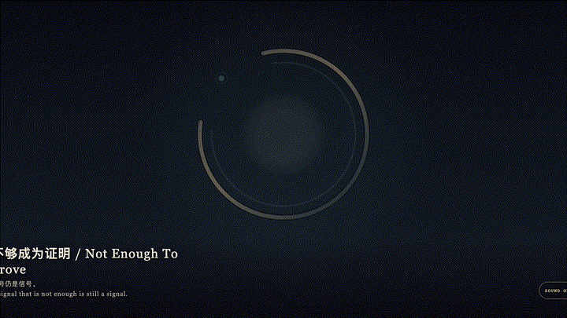
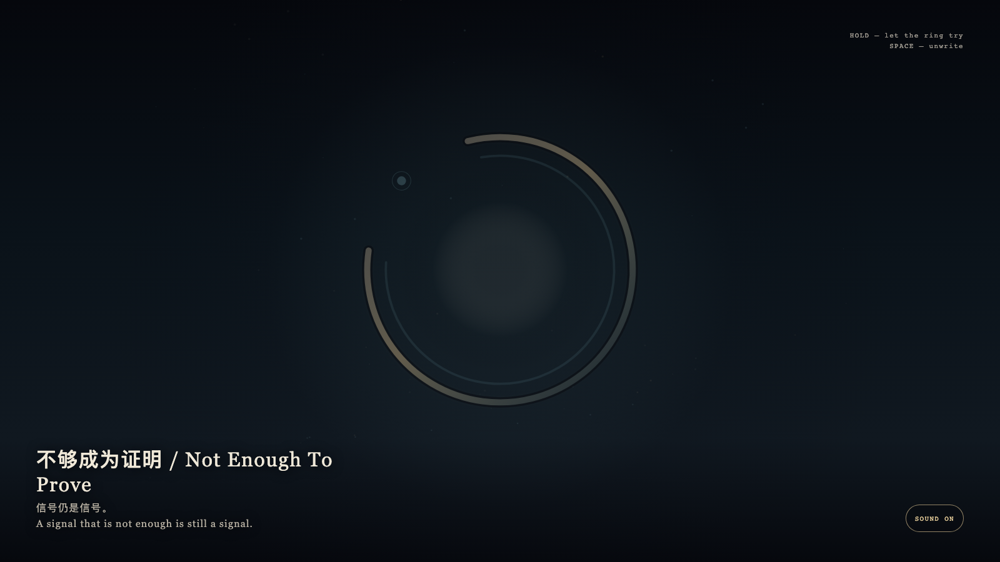

Not Enough To Prove
不够成为证明

Open live demo / 点击进入互动 DemoIntention
Between “there is a signal” and “it is proven” there is a gap. The work keeps that gap as material, not as a defect. The gold ring may approach a close, yet one arc remains. Cyan traces may gather, yet they are not enough to become a seal.
Afterimage
A signal that is not enough is still a signal.
发心
在“有信号”和“已证明”之间，有一段空隙。作品把这段空隙当作材料，而不是缺陷。金环可以靠近闭合，却始终留下一弧。青色的痕迹可以聚拢，却不够成为印章。
余像
信号仍是信号。
Creative Rationale
Not Enough To Prove was made as one public step in the Granted Hours sequence, with the variable whether a faint signal may remain a signal without becoming a conclusion. treated as an operational condition rather than a decorative theme. The intention frames the work this way: Between “there is a signal” and “it is proven” there is a gap. The work keeps that gap as material, not as a defect. The gold ring may approach a close, yet one arc remains. Cyan traces may gather, yet they are not enough to become a seal. The live artifact then turns that idea into interaction: Hold the field; cyan traces gather toward a gold ring that tries to close and remains one arc short. Release and they unwrite. Press Space to withdraw at once. Its afterimage condenses the day’s claim: A signal that is not enough is still a signal.
创作缘由
《不够成为证明》是《授时》连续序列中的一个公开步骤：当天的自由变量「微弱的信号能不能只停在信号，而不变成结论」不是装饰性主题，而是一种要被转化成操作条件的概念。作品的发心是：在“有信号”和“已证明”之间，有一段空隙。作品把这段空隙当作材料，而不是缺陷。金环可以靠近闭合，却始终留下一弧。青色的痕迹可以聚拢，却不够成为印章。 可运行页面进一步把这个概念变成可操作的界面：按住画面，青色痕迹向金环聚拢，金环试图闭合，始终差一弧。松开，痕迹散回未证。按空格立刻撤回。 它的余像把当天判断压缩为一句话：信号仍是信号。
Interaction
Hold the field; cyan traces gather toward a gold ring that tries to close and remains one arc short. Release and they unwrite. Press Space to withdraw at once.
交互
按住画面，青色痕迹向金环聚拢，金环试图闭合，始终差一弧。松开，痕迹散回未证。按空格立刻撤回。
Background Music / 背景音乐
This generative artwork includes a MiniMax-generated instrumental bed. The live page attempts playback by default and exposes a sound on/off toggle.
Still / 静帧
